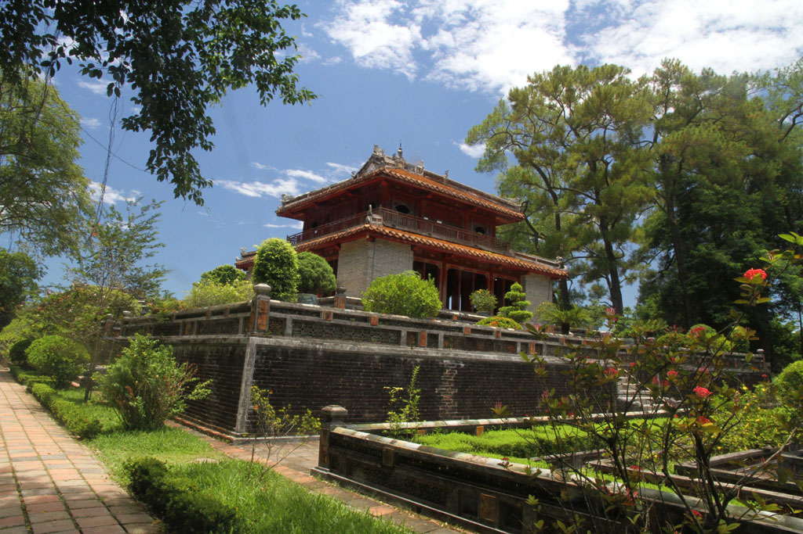

/ Départ de Hué
8h00 réveil et petit déjeuner à l’hôtel. Pancakes chocolat, oeufs, cafés, jus de citron.
9h00 les sacs sont bouclés, on galère pour réserver un hôtel à Hanoï, on se rabat sur booking.com
Nous retrouvons par hasard le taxi de la veille, aujourd’hui nous allons visiter la tombe impériale de Minh Nang, c’est une très belle visite. Nous sommes quasiment seuls sur le site.

13h00 De retour on s’arrête au Kore, profiter d’un dernier jus ou caphé face à la rivière.
14h00 On repart chercher les robe de ces 2 demoiselles.
15h00 Pause repas dans une cantine, ribs marinés grillés, cote de porc marinée grillée, riz légumes, bières et jus.
16h30 nous somme de retour à l’hôtel comme il nous avait été demandé. Nous prenons une douche à l’office.
17h45 un mini bus vient enfin nous chercher.
18h15 Départ du sleeping bus.
19h30 pause repas rapide pour les chauffeurs.